<>
ATARI 400
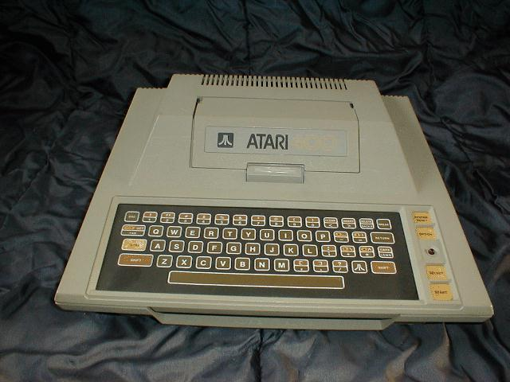
Procesor 6502 /1,79MHz
RAM 8kB rozszerzalna do 16kB
ROM 10kB
Procesor graficzny ANTIC + CTIA (w późniejszych wersjach
GTIA)
Rozdzielczość maksymalna 320 X 192 w trybie
monochromatycznym
Grafika
Tryby tekstowe 40 lub 20 kolumn w 24 wierszach, 10 kolumn w 12
wierszach
Wyjście video RF modulator, Composite luminance, Composite
chroma
Porty: Serial I/O, monitor, 2 gniazda joysticka, gniazdo
kartridża.
Zewnętrzne peryferia (FDD, magnetofon,drukarka, modem) dołączane
do portu SIO.
Dźwięk: czterokanałowy generator dźwięku POKEY
ATARI 800
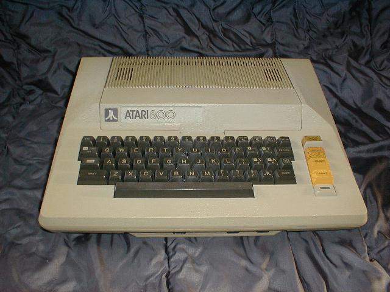
Parametry jak ATARI 400, RAM 16kB rozszerzalna do 48kB, dwa
gniazda kartridża. Zwraca uwagę klawiatura jak w elektrycznych maszynach do pisania,
nazywano ten typ klawiatury "profesjonalną". Zresztą kształt komputera nie odbiegał
zbytnio od kształtu maszyny do pisania...
Zarówno Atari 400 jak i Atari 800 początkowo były sprzedawane z pamięcią 8K, szybko jednak pojawiły się karty rozszerzające pamięć i od 1980r obydwa
modele sprzedawano z 16K RAM.
Magnetofon ATARI 410
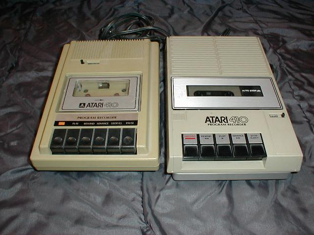
Podstawową - bo najtańszą - pamięcią masową do komputerów z przełomu lat 70/80 ub. w.
był magnetofon. Do komputerów serii 400/800 produkowane były dwie wersje tego magnetofonu.
Widoczny na zdjęciu z lewej to magnetofon nowszy (z klawiszem PAUSE), z prawej - wersja starsza.
Wersja japońska była produkowana wyłącznie na rynek amerykański, a i to w ograniczonej ilości.
Stacja dysków ATARI 810
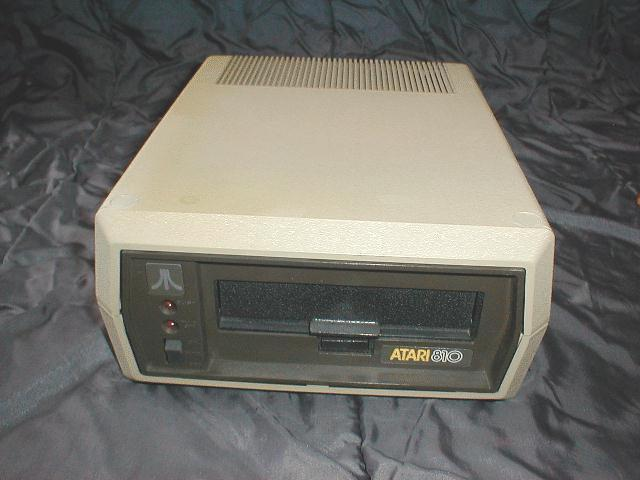
Stacja dyskietek Atari 810 pozwalała na jednostronny zapis dyskietek 5,25"
w pojedynczej (S) gęstości. W tym formacie dyskietka miała 40 ścieżek. Na każdej ścieżce było
umieszczonych 18 128-bajtowych sektorów. Do zapisu drugiej strony dyskietki trzeba było wyciąć
w odpowiednim miejscu otwór w kopercie i dyskietkę odwrócić. Jedna strona dyskietki miała
pojemność 90kB.
Atari 810 sprzedawana była z DOSem 2.0 S, który w jednym sektorze zapisywał 125 bajtów danych. Pozostałe
trzy bajty zajęte były na informacje o sektorze. Osiem sektorów zajętych było przez spis plików
zapisanych na dyskietce. Informacje o jednym pliku zajmowały 16 bajtów, co ograniczało ilość
plików na stronie do 64. Ponadto jeden sektor zajęty był przez VTOC (tabela zajętości sektorów),
zaś pierwsze trzy były zajęte przez DOSa. Rzeczywista pojemność strony dyskietki dostępna do
zapisu danych wynosiła więc 88kB.
Drukarka ATARI 820
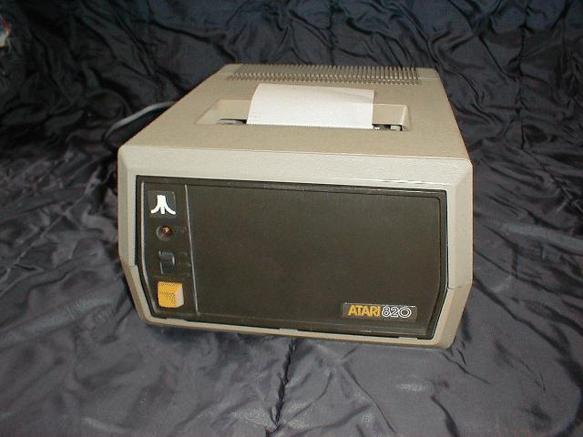
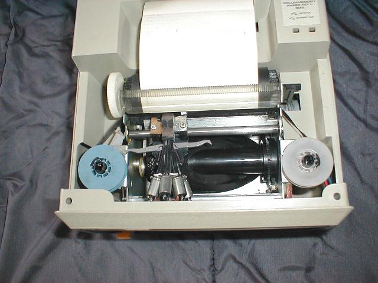
Drukarka z głowicą igłową. Pozwalała na druk na papierze o szerokości
11 cm.
Atari 820 Printer: ( = LRC 7000 / Eaton 7000 )
- 40-column impact printer
- 5x7 dot matrix
- 40 characters per line, upper & lower case alpha
- horizontal and vertical alphanumeric characters
- 6507 microprocessor, 6532 RAM I/O chip, 2K ROM
- 40 characters per second
Uwagę zwraca rozmiar głowicy w stosunku do rozmiarów drukarki. Ciekawy jest też dźwięk wydawany podczas drukowania - dudni jak tam-tam.
Drukarka ATARI 822
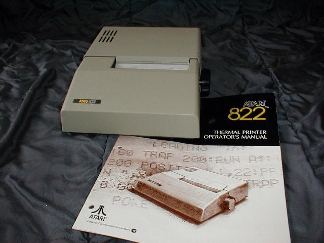
Drukarka z głowicą termiczną. Pozwalała na druk na papierze termoczułym o szerokości
11 cm. Wydruk był 40 kolumnowy w matrycy 5 X 7 punktów.
Atari 822 Thermal Printer: ( = Trendcom 100 )
- 37 characters per second
- 10 characters per inch
- 40 characters per line, upper/lower case and point graphics
- 5x7 dot matrix
Drukarka ATARI 825
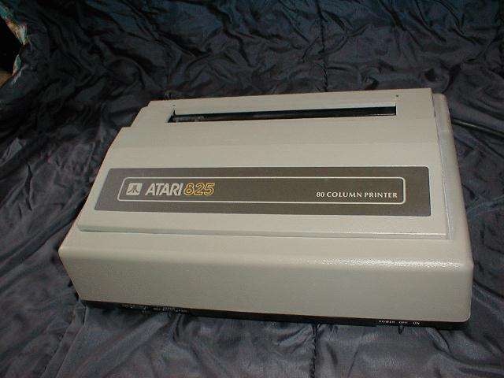
Drukarka siedmioigłowa z możliwością wydruku tekstu w czterech różnych trybach na papierze
perforowanym szer 21 cm, z rolki lub w pojedynczych arkuszach. Wyposażona jest w interfejs Centronics.
Wymaga dołączenia do systemu poprzez interfejs Atari 850.
Modem ATARI 830
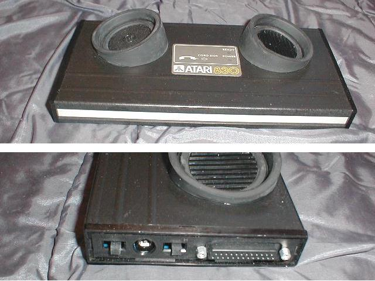
Modem akustyczny. Połączenie możliwe było po umieszczeniu słuchawki telefonu w
odpowiednich gniazdach i wybranie numeru telefonu, który musiał być wyposażony w podobny modem.
Szybkość transmisji 300 baud. Połączenie z komputerem możliwe było wyłącznie poprzez interfejs Atari 850.
Modem ATARI 835
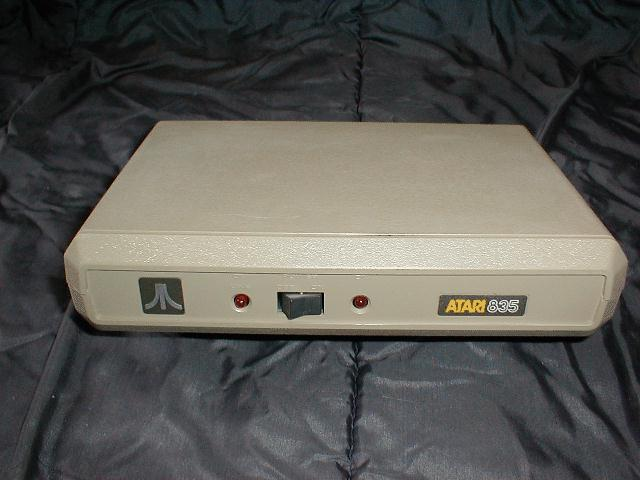
Modem galwaniczny. Szybkość transmisji 300 baud. Podłączany do gniazda SIO współpracował z programem Telelink I (kartridż).
Interfejs ATARI 850
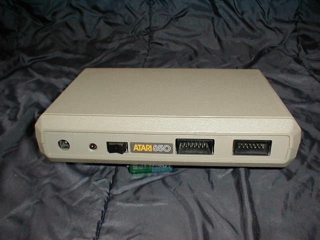
Interfejs ten wyposażony jest w cztery porty RS-232 i jeden port Centronics.
Klawiatura Atari CX85
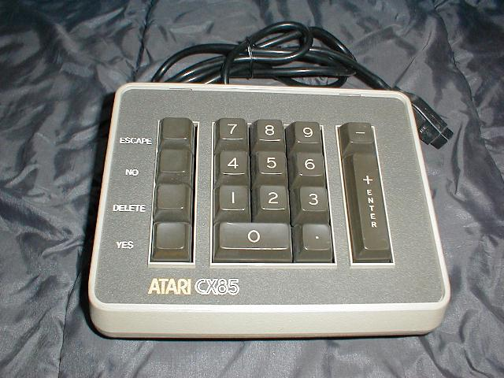
Zewnętrzna klawiatura numeryczna dołączana do portu dżojstika